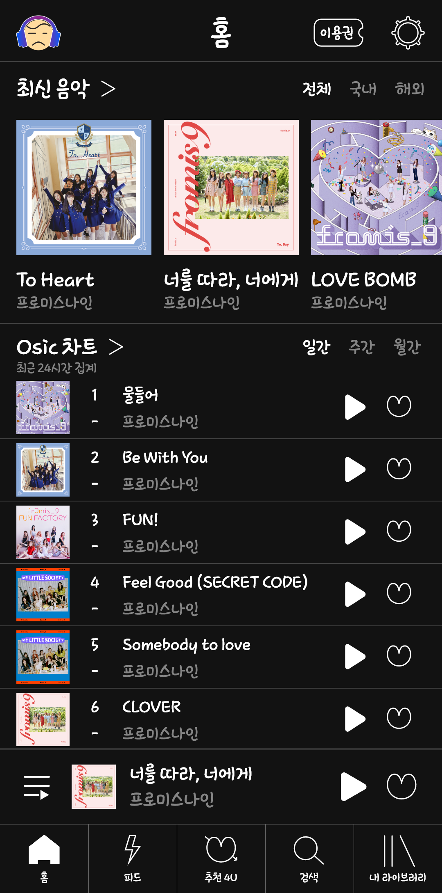
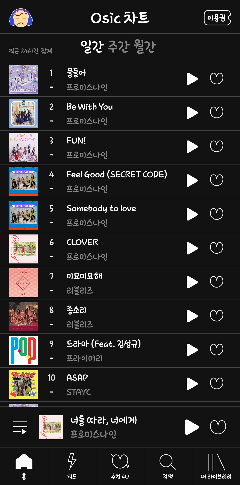
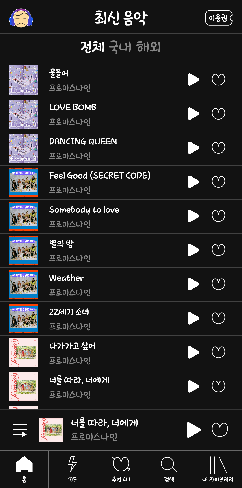
 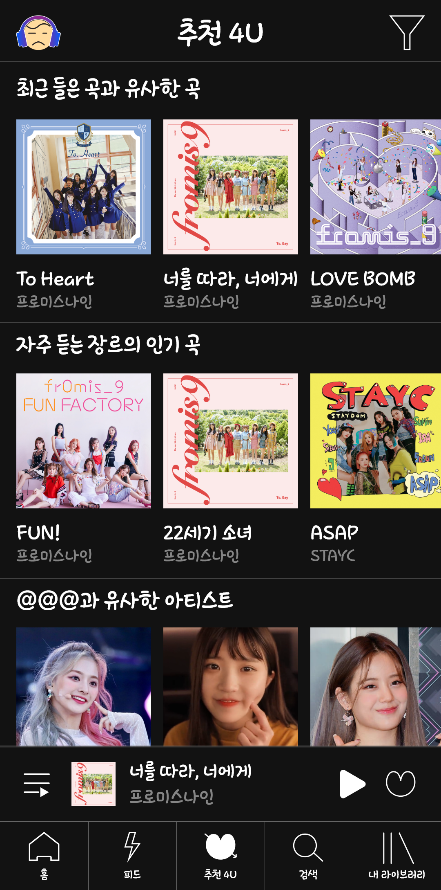
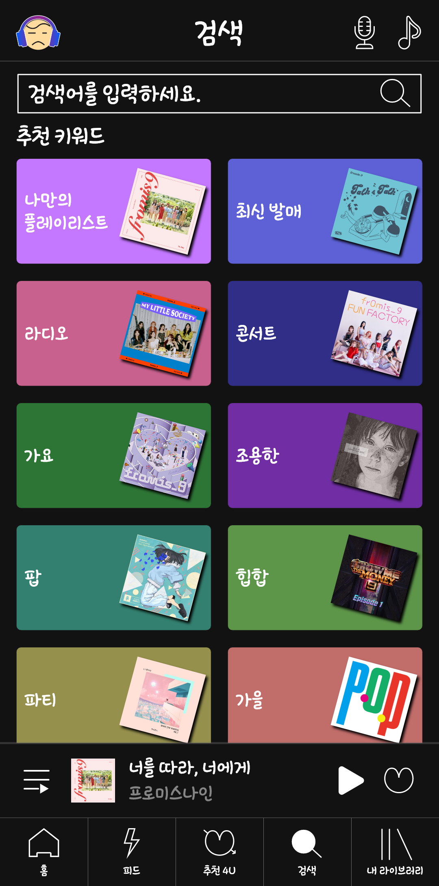
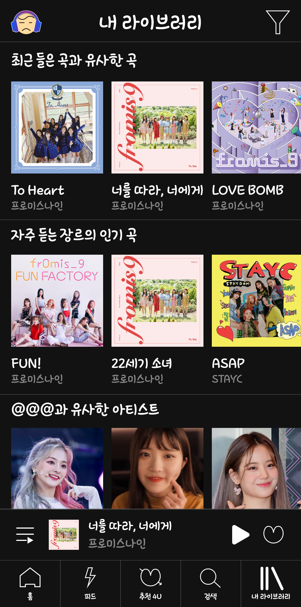
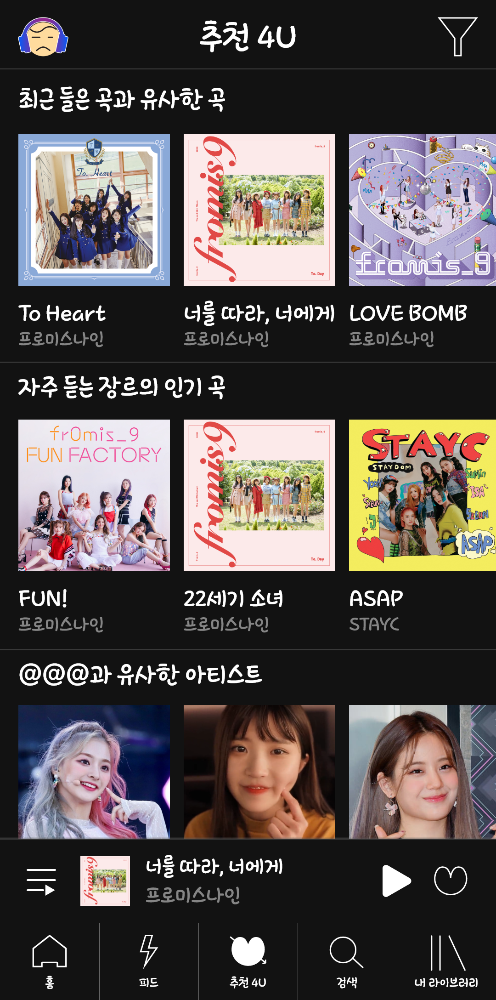
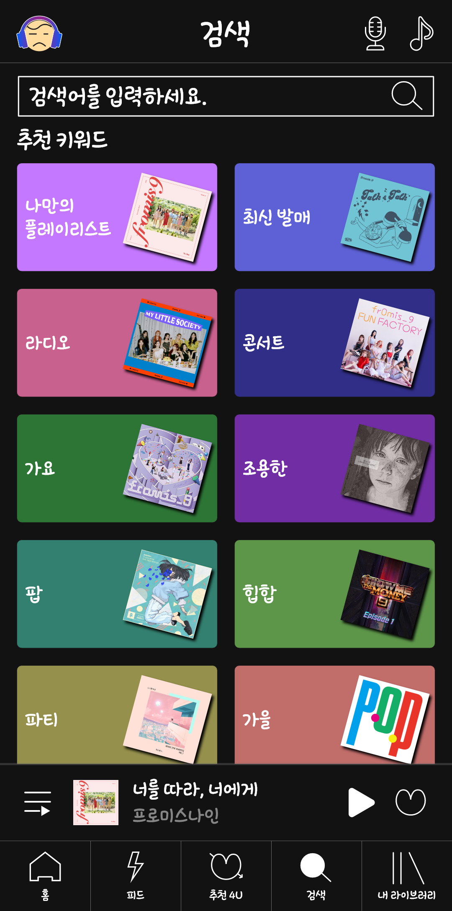
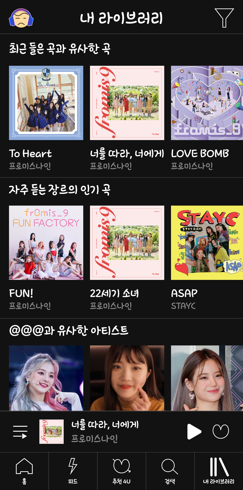
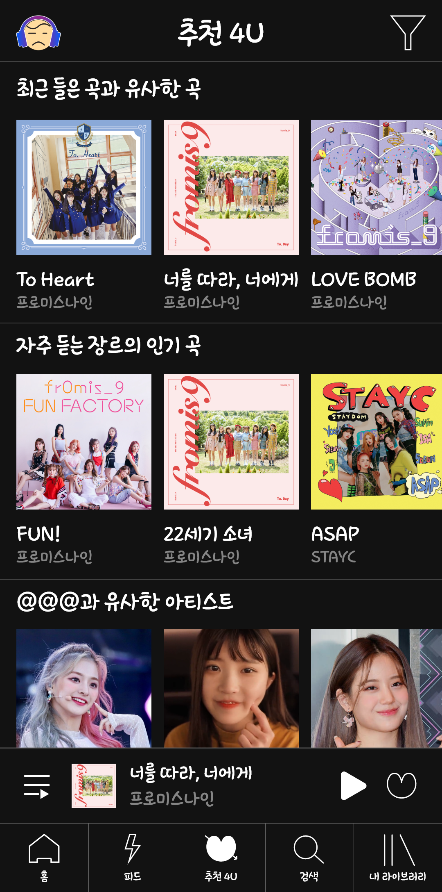
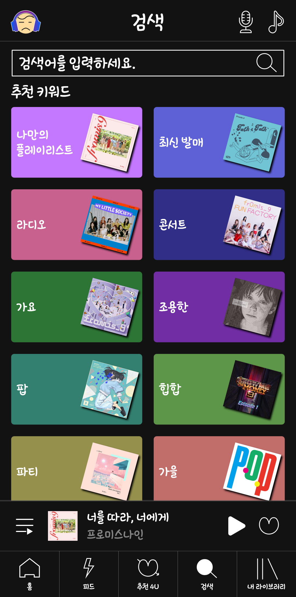
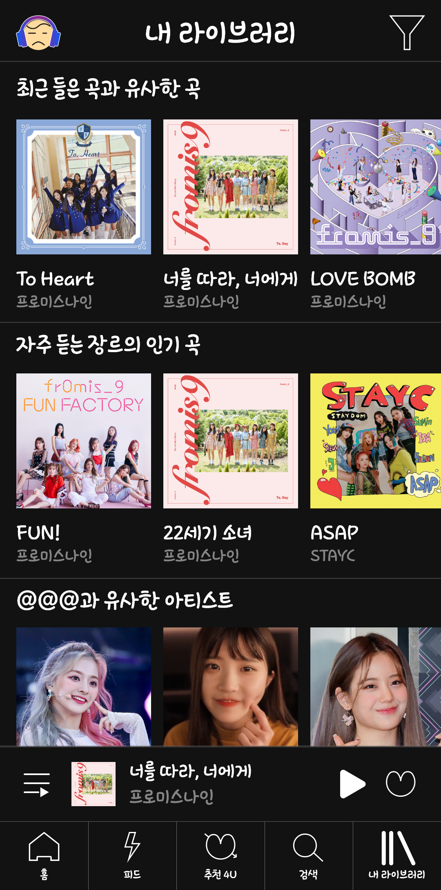
(앱처럼 클릭 가능합니다.)
설명
기존 스트리밍 앱들 각각의 장점을
한데 모아본 앱 디자인입니다.
폰트
넥슨 배찌체를 사용하여 누구나 쉽게 접근할 수 있도록
가벼운 느낌을 주었습니다.
컬러
음악들의 정보를 찾는 것에 좀 더 집중시키기 위해
검은색과 하얀색만 사용했습니다.
로고
앱 타이틀인 Osic의 sic을 의인화하여
음악감상을 표현하고자 했습니다.
디자인
기존 앱들과 디자인은 크게 다르지 않지만
조금 더 음악 감상이나 사람간의 소통이 원활할 수 있게
만들고자 했습니다.